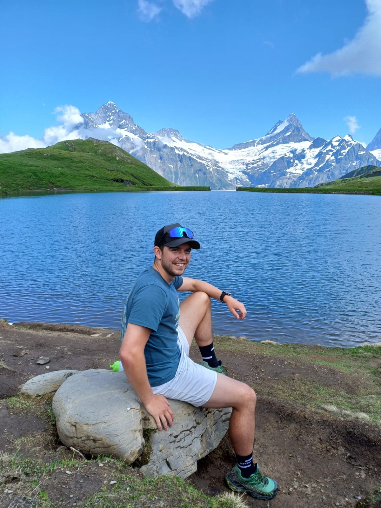
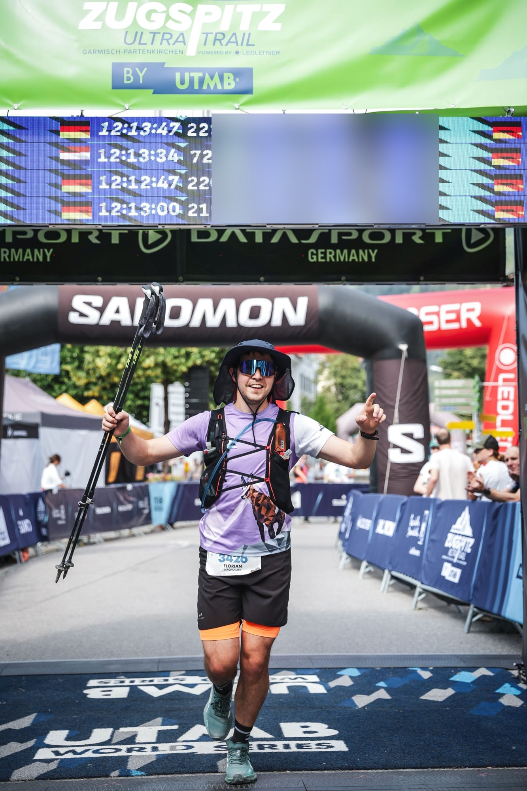
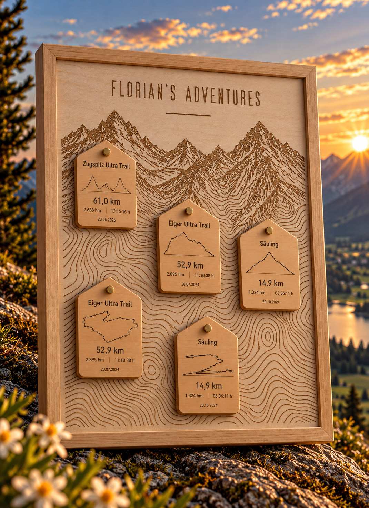
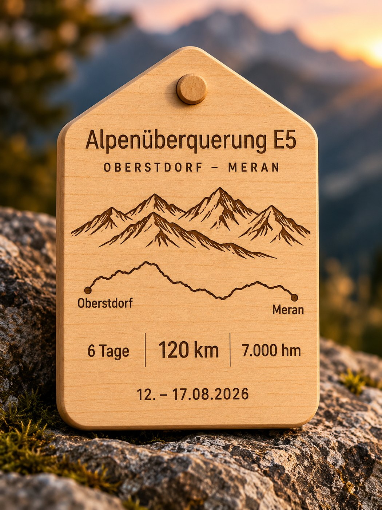
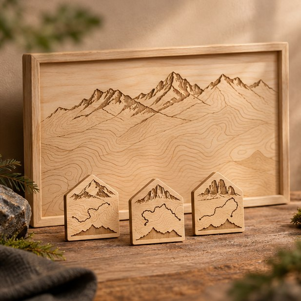

Für jeden Weg
Vom ersten Spaziergang in den Bergen bis zum Ultratrail. Entscheidend ist, was du erlebt hast – nicht, wie schnell du warst.
Über MONTMORY
Ob deine erste Wanderung, dein Lieblingsgipfel oder ein Ultratrail: MONTMORY macht aus deinem Erlebnis eine persönliche Erinnerung aus Holz.
Die Idee dahinter
Es gibt Wege, die bleiben: die erste Wanderung, die du ganz allein geschafft hast. Ein Gipfel mit Freunden. Ein Trailrun, auf den du lange hingearbeitet hast. Jeder dieser Momente kann etwas Besonderes sein.
MONTMORY ist aus dem Wunsch entstanden, genau diese Momente festzuhalten – nicht nur als digitale Aufzeichnung, sondern als kleines Stück Erinnerung, das man in die Hand nehmen kann.
Jeder Trail Mark erzählt deine Geschichte. Deine Strecke wird zur individuellen Gravur auf Holz – bewusst gestaltet, mit Liebe zum Detail und als Erinnerung an einen Moment, der für dich zählt.
Und eine Erinnerung ist erst der Anfang: Mit jedem weiteren Trail Mark wächst eine Sammlung, die deinen ganz persönlichen Weg zeigt.
Der Gründer hinter MONTMORY


Die Berge sind für mich mehr als nur ein Ausflugsziel. Sie stehen für Freiheit, neue Herausforderungen und Momente, die lange im Kopf bleiben.
Beim Trailrunning erlebe ich genau das: intensive Anstiege, besondere Ausblicke und dieses Gefühl, nach vielen Kilometern im Ziel anzukommen.
Ich wollte solchen Erlebnissen einen sichtbaren Platz geben – nicht nur auf dem Handy oder in einer Trainings-App, sondern als Erinnerung, die man jeden Tag vor Augen hat. Und zwar nicht nur für große Wettkämpfe: Auch eine kleine Tour kann eine große Geschichte erzählen.
So wächst MONTMORY aus meiner Begeisterung für die Berge und dem Wunsch, mit Holz und Handwerk etwas Persönliches zu schaffen. In meiner kleinen Werkstatt entwickle ich die Trail Marks Schritt für Schritt weiter – mit dem Anspruch, hochwertige Erinnerungsstücke zu gestalten, die für viele Menschen zugänglich bleiben.
Nicht einfach nur ein Produkt. Sondern eine Idee, die aus echter Begeisterung entstanden ist.
Wofür MONTMORY steht
Vom ersten Spaziergang in den Bergen bis zum Ultratrail. Entscheidend ist, was du erlebt hast – nicht, wie schnell du warst.
Holz, individuelle Gravur und eine charakteristische Form verbinden sich zu einem Erinnerungsstück mit Persönlichkeit.
Ein Trail Mark hält einen Moment fest. Gemeinsam erzählen sie auf dem MONTMORY Board deine ganz eigene Geschichte.
Das MONTMORY Sammelsystem
Ob gemütliche Wanderung, erster Gipfel, Lieblingsrunde oder großer Ultratrail: Jeder Trail Mark steht für ein Erlebnis, das dir etwas bedeutet. Auf deinem MONTMORY Board finden diese Momente einen gemeinsamen Platz. Das magnetische Konzept macht es möglich, deine Sammlung nach und nach zu erweitern und neu anzuordnen.

Erleben
Deine Tour laufen, wandern oder einen persönlichen Meilenstein erreichen.
Gestalten
Die GPX-Strecke hochladen und deinen individuellen Trail Mark erstellen.
Sammeln
Den Trail Mark am Board anbringen. Mit jedem Abenteuer wächst deine Geschichte.
KI-generiertes Konzeptbild zur Veranschaulichung des Sammelsystems – das spätere Produkt kann davon abweichen.
Der Trail Mark im Detail
Eine klare Form, deine individuelle Route und die wichtigsten Tourdaten: So entsteht ein Erinnerungsstück, das sich bewusst von einem gewöhnlichen Souvenir unterscheidet.
Die markante Silhouette verbindet jeden Trail Mark sichtbar mit der Welt der Berge.
Aus deiner GPX-Datei entsteht eine persönliche Darstellung der Route oder des Höhenprofils.
Tourname, Distanz und Höhenmeter machen aus dem Holzstück deine individuelle Erinnerung.
Die Trail Marks lassen sich auf dem geplanten MONTMORY Board ergänzen und neu anordnen.
Was wirklich zählt
Du musst weder besonders weit laufen noch besonders hoch steigen, damit dein Erlebnis einen Platz verdient. Manche Erinnerungen entstehen auf einem anspruchsvollen Wettkampf, andere bei einer spontanen Wanderung oder dem ersten gemeinsamen Gipfel.
Bei MONTMORY entscheidet nicht die Leistung über den Wert eines Trail Marks, sondern die Bedeutung des Erlebnisses. Deshalb möchten wir besondere, sorgfältig gestaltete Erinnerungen schaffen, die nicht nur Extremsportlern vorbehalten sind. Deine Sammlung erzählt nicht nur, wo du warst – sondern was dir wichtig ist.

Mit Liebe zum Detail
Vom Streckenverlauf über die Schrift bis zur Gravur zählt jedes Detail. MONTMORY verbindet die Begeisterung für Berge und Natur mit handwerklicher Sorgfalt. In unserer kleinen Werkstatt entwickeln wir individuelle Erinnerungsstücke aus Holz: hochwertig im Anspruch, persönlich im Charakter und gedacht für viele weitere Abenteuer.
Deine Erinnerungen. Dein Weg.
Ein besonderer Gipfel, drei unvergessliche Touren oder eine ganze Sammlung: Hier bekommst du einen ersten Eindruck von den geplanten Möglichkeiten.

Für den Weg, an den du dich immer erinnern möchtest.
Preisidee: ca. 14,90–19,90 €
Ein kleines Kapitel deiner persönlichen Berggeschichte.
Preisidee: ca. 39,90–49,90 €
Das Sammelboard als Zuhause für deine Trail Marks.
Preisidee: ca. 59,90–89,90 €
Ein geplantes Starter-Set aus Board und drei Marks.
Preisidee: ca. 99,90–129,90 €Ein Blick in die Entwicklung: MONTMORY ist noch nicht erhältlich. Alle Bilder sind beispielhafte Visualisierungen, keine Fotos fertiger Serienprodukte. Die Preisideen sind unverbindlich; aktuell können keine Bestellungen angenommen werden.
Als erste, unverbindliche Orientierung sind nach einem zukünftigen Verkaufsstart etwa 7–14 Werktage angedacht. Die tatsächliche Lieferzeit und Versandkosten stehen noch nicht fest.
Keine verbindlichen Preise, Lieferzusagen oder Verkaufsangebote. Angaben können sich bis zum Verkaufsstart ändern.
„Jedes Abenteuer verdient einen Platz.“
From Mountains to Memories.
Dein nächstes Kapitel
Egal ob fünf Kilometer oder hundert: Wenn dir eine Tour etwas bedeutet, ist sie es wert, festgehalten zu werden. Entdecke schon jetzt im Konfigurator, wie dein persönlicher Trail Mark aussehen könnte. Bestellungen sind derzeit noch nicht möglich.
Trail Mark unverbindlich gestalten →